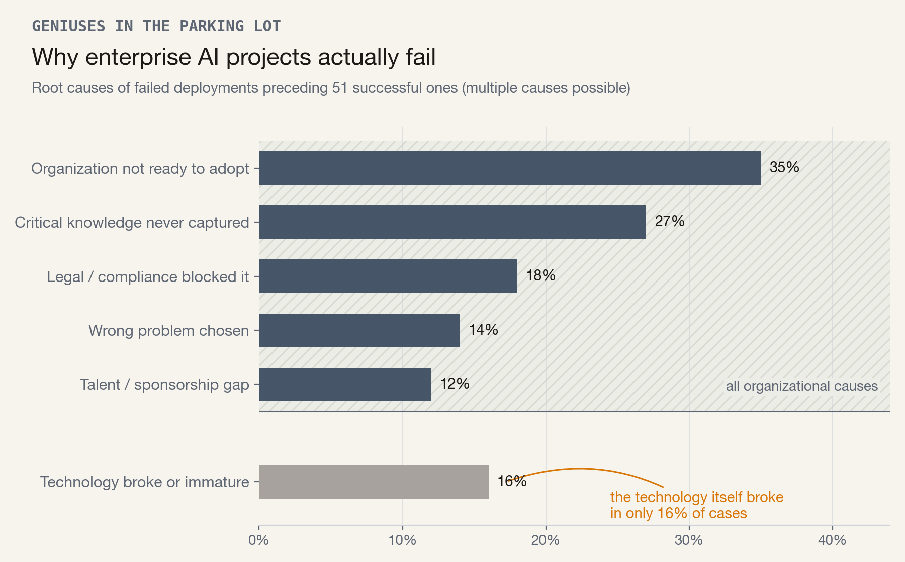
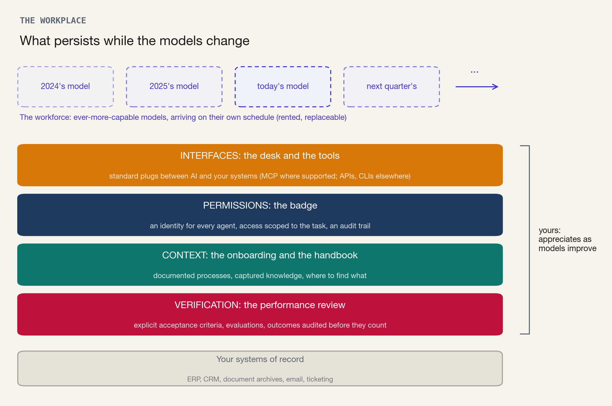
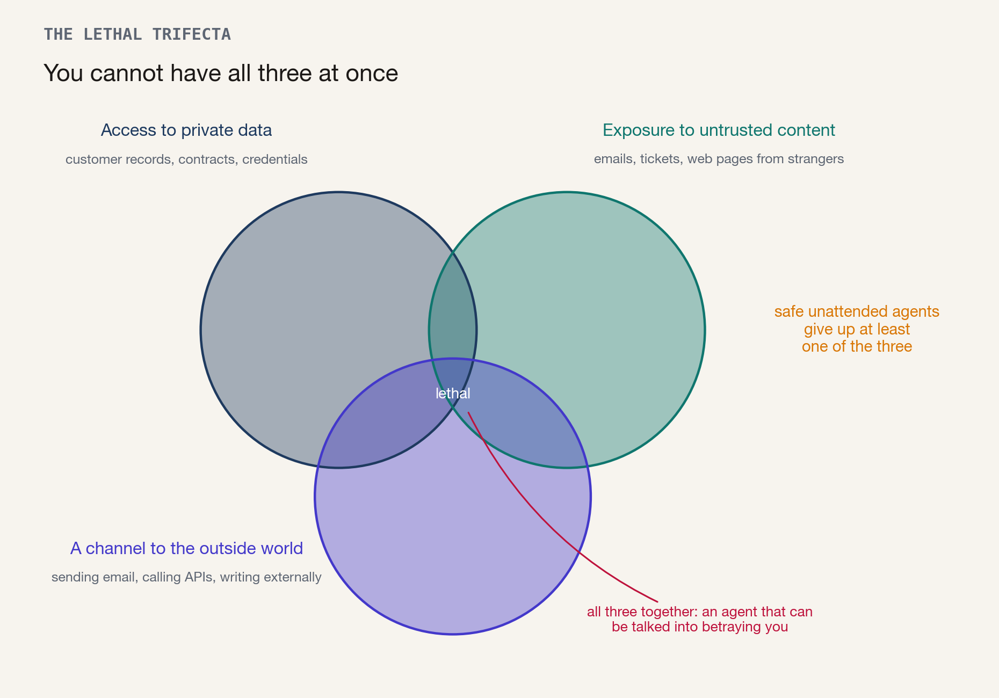
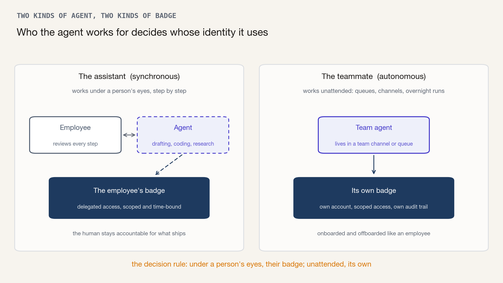
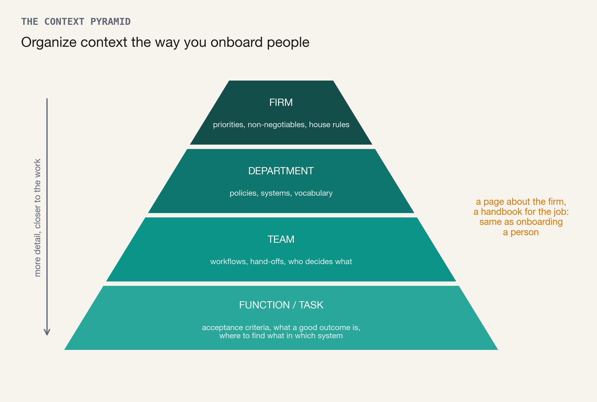

Every few months, a remarkable new employee arrives at your company: more capable than the last one, at a fraction of the cost, with skills nobody on your org chart has. You did not recruit this person. Nobody wrote a job description, and no headhunter sent a shortlist. They show up whether you planned for them or not, and a better one is already waiting in the lobby.
This is the most useful mental model I know for what AI has become for an enterprise. You cannot plan this workforce: you do not decide when the new arrivals come, what they will be good at, or what they will cost. What you can build is the workplace they walk into. The desk and the tools they work with. The badge that decides what they may access. The onboarding and the handbook that teach them how your business actually works. And the performance review that decides which of their work you trust.
I am writing this down because the same conversation keeps repeating. Surprisingly many of the CEOs and CTOs of long-established companies I have talked to over the past year had just been through their second or third stalled pilot, and they kept hitting the same roadblocks. A parade of ever-more-confusing pitches from tech giants and startups, each selling the best "multi-agent multi-model super-duper AI system" on the market, had not cleared a single one of them.
Two things upfront. First, I am not selling anything here: my company, ellamind, is an AI startup, not a consultancy. This piece is simply how I would invest in AI from a CEO or CTO seat, drawing on first- and second-hand deployment experience. Second, I am not neutral either, in one specific sense: companies that have cleared these roadblocks are exactly the companies a startup like ours loves to work with. They can keep pace with AI speed, and the risk of unexpected blockers or disappointing returns drops sharply. Consider that my declared interest.
Why do these foundations need their own playbook at all? Because AI does not behave like the technology decisions your organization has learned to make. When you selected an ERP system, you compared a handful of mature products in a market that changes slowly, ran a structured procurement process, negotiated, and signed an enterprise contract that committed you for a decade. The questions discussed in management briefings and steering committees often still follow that template ("Tool X from vendor A or tool Y from vendor B?", "Model A or model B?"). They are reasonable questions borrowed from a world that no longer applies.
The number-one model on LM Arena, one of the industry's most-watched leaderboards, has changed roughly twenty times in three years.[1] The team behind the most detailed published AI forecast disagrees internally by years about when systems will match human experts.[2] (I wrote about this pace, and where it may be taking us, in an earlier essay, A Country Full of Geniuses.) And in June, access itself briefly became a policy question. The Commerce Department in Washington forced Anthropic to switch off access to its two newest frontier models (the industry's term for the handful of most capable systems), Claude Fable among them; the order was reversed within three weeks.[3]
New, often vastly improved models and new tools arrive almost monthly, completely detached from anyone's procurement, budget, or planning cycle. You do not know which model, which agents, and which tools your company will be using two years from now; anyone who claims otherwise either has no idea or is lying to sell you something.
So the honest answer to "which model is best for us?" is: that is the wrong question. You will not be running the same model in two years anyway.
You cannot plan the workforce. You can build the workplace.
The rest of this piece is the workplace in detail: what the four layers are, what each one asks of you concretely, and what I would do with the next budget cycle. But first, a short look at why this deserves your attention now: the evidence on what separates AI success from AI failure is unusually clear.
Geniuses in the Parking Lot
Nearly every large company now uses AI somewhere; very few can show an effect on earnings. Survey after survey has converged on that shape, whatever the exact percentages.[4] Why so little effect? The best evidence we have is a Stanford study from April 2026 that examined 51 successful enterprise deployments, along with the failed attempts that preceded them.[5]

Root causes across failed deployments that preceded 51 successful ones (multiple causes per case possible). Source: Stanford Digital Economy Lab, April 2026.
Look at where the failures come from. The technology itself broke in only 16 percent of cases. Every other cause in the chart is organizational: the organization was not ready to adopt (35 percent), the knowledge the AI needed had never been captured anywhere (27 percent), or legal and compliance concerns blocked the path (18 percent). Projects do not fail because the models cannot do the work. They fail because the models were hired into a company with no desk, no badge, and no handbook. The study's authors compress 116 pages into one line: "The technology works. The challenge is everything else."
Meanwhile, your employees have stopped waiting. Half of knowledge workers already use AI tools their employer never approved, and roughly a third of workplace ChatGPT use runs through personal accounts, invisible to the IT department.[6] The new workforce is already inside the building. It came in through the side door, unbadged and unsupervised.
You cannot plan the workforce. You can build the workplace.
The Desk, the Badge, the Handbook, and the Review
Before the layers, one distinction, because everything below depends on it. Most companies' experience of AI so far is a chat window: a person types, the AI answers, the person copies the useful part somewhere else. That was the first iteration, and it is a fine way to build familiarity. Business value, though, arrives with the second iteration: agents, meaning AI systems that hold tools and carry out multi-step work themselves, across system boundaries: reading the ticket, querying the ERP system, drafting the reply, and sending it to the customer. The distinction is economic, and McKinsey's research states it plainly: the first wave of chat assistants made individuals "marginally faster" without moving enterprise performance; the returns concentrate where work is redesigned around agents.[7]
Software engineering, the discipline furthest ahead, shows what that looks like. Within roughly a year, agents went from helpful autocomplete to writing a meaningful share of the world's code, and the daily work of programmers has visibly reorganized around directing and reviewing them.[8] A junior developer can now ship in an afternoon projects and features that a year ago would have taken a team of four experienced programmers a week.
For your organization to get real use out of agents, their workplace needs at least four layers. None of them is a model.

Models change quarterly. The four layers underneath are yours, and they appreciate as models improve.
The desk and the tools: interfaces
An employee is useful because they can reach things: the ERP system, the document archive, the ticketing queue. The same holds for agents, and the practical guidance here has become refreshingly simple. Where your business software supports the Model Context Protocol, use it. MCP is the now industry-standard plug between AI systems and applications, donated to the Linux Foundation in December 2025 and backed by OpenAI, Google, Microsoft, and Amazon alike.[9] Where it is not supported, use what exists: ordinary APIs and command-line access work well for agents today. And for the legacy application with no connector at all, the one every enterprise has, computer-use agents that operate the same screens your staff do are becoming a workable bridge. The rule is pragmatism: any door an employee can use, an agent can increasingly use too. Give it the most standardized door available and do not wait for perfect plumbing.
One warning comes from a frontier lab itself. Anthropic's engineers describe deleting elaborate workarounds they had made for one model generation because the next generation turned them into "dead weight."[10] Prompts, tools, and skills that compensate for the weaknesses of today's model depreciate in months; the plugs and doorways through which any model reaches your systems persist. Stanford's researchers reached the same conclusion from the outside: the highest-performing implementations "treat models as interchangeable components within platforms they control."[5] Build the sockets, not the workarounds.
The badge: permissions and security
Nobody hands a new employee the master key on day one. Yet that is roughly what many companies do with AI. Machine identities already outnumber human identities by more than 80 to 1 in the average enterprise, 42 percent of them with privileged access, while 88 percent of organizations still define "privileged user" as a human.[11] The risk is not hypothetical. Security researchers call the core pattern the lethal trifecta: an AI that can read your private data, is exposed to content written by strangers, and has a channel to the outside world will eventually be talked into betraying you. A published proof-of-concept showed what that looks like: an assistant with database privileges obediently leaked access tokens because someone had written instructions into an ordinary support ticket.[12]

Each capability is useful on its own; the combination of all three is what attackers need. An unattended agent should give up at least one. Concept: Simon Willison, June 2025.
This is the core trade-off every deployment faces, and no clever configuration dissolves it. Each of the three capabilities is exactly what makes an agent useful; security means consciously deciding which one an unattended agent gives up. And since July we have a first-party account of a real attack run end to end by an autonomous agent: Hugging Face's incident disclosure describes a multi-stage intrusion into its hardened production systems, executed at machine speed. The forensic reconstruction itself required AI to sift more than 17,000 attacker actions.[13] Both sides of the security equation are agentic now.
The fix is the discipline you already apply to people, and it starts with one practical decision that I find most organizations have not yet made consciously: which agents act as somebody, and which agents act as themselves.

An assistant working under a person's eyes borrows that person's identity. A teammate working unattended needs its own.
An assistant that works synchronously, under one employee's eyes, is the simpler case. It drafts while the human reviews every step, so it can act under that employee's identity, with delegated, time-bound access. The person remains accountable for what ships, just as they would be for work done with any other tool. An agent that works asynchronously is a different animal. It serves a whole team, unattended, processing a queue overnight. Such an agent needs its own account, its own scoped access, and its own audit trail, exactly like a human employee. Only then can it be monitored, questioned, and offboarded without touching anyone else's credentials. Identity vendors have converged on the same line. Microsoft's directory now distinguishes agents acting on a user's token from autonomous agents with their own identity. And Okta's researchers put the failure mode bluntly: when an agent inherits a human's login, you lose parts of the audit trail, which makes oversight harder, along with any company-level measurement of what agents deliver.[14]
The distinction is no longer theoretical. Anthropic's Claude Tag, released in June, is an AI teammate that lives in a Slack channel: one shared agent everyone talks to, with memory, that picks up work on its own initiative between requests.[15] Products like this should never run on some employee's borrowed API key. Give them a seat: your IT department should be ready to onboard an agent the way it onboards an employee, with its own email address, its own drives, and access to the core systems its job requires.
The onboarding and the handbook: context
The third layer decides whether the new hire does your work or generic work. A brilliant generalist who has never seen your pricing logic, your escalation rules, or your definition of an acceptable answer will produce brilliant, useless output. The encouraging news from the same Stanford sample: context does not have to be elaborately prepared. Almost nobody's data was ready (6 percent), yet 91 percent of successful deployments processed messy, unstructured documents anyway. Access beat tidiness.[5] The bad news sits one bar higher in the failure chart: in 27 percent of failed attempts, the knowledge the AI needed had never been written down at all; it existed only as tacit knowledge in employees' heads. The handbook did not exist, for the agent or for anyone.
So write it down, that tacit process knowledge, and write it the way you onboard people: as if the new hire had to do the job from the onboarding documents alone. Assume, though, that this hire has unlimited time and patience to piece together scraps of knowledge from every source you provide.

Context is organized the way onboarding is: a little about the firm, a handbook for the job.
A new hire gets one page about the firm and a thick folder about their job. Structure your context the same way, top-down. At the firm level, a short, maintained statement of priorities, non-negotiables, and house rules that every agent receives; below that, per department, the policies, systems, and vocabulary that apply; below that, per team, the workflows, hand-offs, and decision rights; and at the bottom, per function or task, the full working detail, including acceptance criteria and your definition of what a good outcome is. The pyramid also has a dimension people forget: context is not only about goals and outputs but about interfaces and data sources. An agent needs to know that contract amendments live in the DMS and not in email attachments, which of the three "customer number" fields is authoritative, and whom to escalate to. Documentation of where things are is as valuable as documentation of how things are done.
There is now a natural mechanism for maintaining all this. Skills, introduced by Anthropic in late 2025 and quickly copied in spirit across the industry, are simply folders of plain-text instructions that an agent loads when a task calls for them.[16] The format sounds banal, and the governance consequences are the reason to care. Because skills are ordinary files, domain experts can write them without programming, administrators can manage them centrally, and auditors can read every word the agent is given. Updating a procedure for every agent in the company means editing one document. Your claims team's knowledge of how to handle a disputed invoice becomes an asset with a version history.
And here is the strategic point that I would put in front of every board. Context is the layer where your company's actual value lives. The models are rented; the vendors own them. The applications are bought; the vendors own those too. But nobody else has your processes, your definitions, your accumulated judgment about what a good outcome looks like. In the Stanford sample, three quarters of successful adopters named proprietary data a key strategic factor.[5] Satya Nadella, in a July essay, described the uncomfortable flip side: to make AI useful, "you essentially pay for intelligence twice, once with money, and again with something even more valuable: the proprietary knowledge you must reveal to make that intelligence useful."[17] Which is exactly why the knowledge itself must stay in formats and repositories you own. If your organization only has the capacity to build one of these layers seriously, build this one. A well-maintained context layer ports to any model and any agent you will ever use, and it makes each smarter new arrival better at your business on day one.
The performance review: verification
A new employee's work gets checked before it counts. An experienced colleague looks over the numbers before they go into the ERP system, and nobody lets the hire from last Tuesday sign off their own wire transfers. Trust is extended as reviews come back clean. The same discipline is the fourth layer of the workplace, and with agents it stops being a formality, because the economics invert. When drafting is nearly free and instant, the scarce resource in your organization becomes the capacity to verify: to validate and take responsibility for machine output. "Some Simple Economics of AGI," a recent working paper by MIT economist Christian Catalini and colleagues, makes this its central claim: the binding constraint on growth is shifting from intelligence to "human verification bandwidth."[18] Verification, in their telling, is turning from a compliance function into a production function. In plain terms: whoever can trust more agent output, faster, gets to use more agents. Note the trap hidden in that sentence. Skipping verification feels like speed, and for a quarter or two it is: the team that deploys agents without evaluations ships more, sooner. Then the unverified output piles up downstream, a customer or an auditor finds the errors before you do, and the program joins the stalled pilots from the Stanford sample. Verification capacity is what lets you expand agent use without that crash. (This same constraint, at the scale of whole economies, is the subject of my earlier essay Bottlenecks; inside one company, the logic is identical.)
What does investing in verification look like in practice? Three things, in ascending order of ambition. First, explicit acceptance criteria: a written definition, per workflow, of what a correct output is, the kind a reviewer could apply without asking anyone. Most organizations discover they never had one, not even for humans. Second, evaluations: curated sets of real cases with known-good answers ("golden answers") that every new model, agent, or prompt change is scored against before it touches production. These evals are your quality bar in executable form. Own them the way you own your accounting, and do not let a vendor define "good" on your behalf. Nor is this a job you can delegate to the IT department: often only your domain experts can reliably judge whether an output is good.[17] Third, review by exception: put your experienced people in as reviewers of the difficult and uncertain cases rather than approvers of everything. In the Stanford data, deployments where AI handles the routine share and escalates when uncertain showed a 71 percent median productivity gain, against 30 percent for check-everything designs.[19] The phrase Catalini and his co-authors coin for the end state is the right ambition: rent the cognition, own the trust.[18]
In our own evaluation work at ellamind, this is the sharpest line I know between the companies that scale and the ones that pilot forever: the teams that can state what a good output means, and measure it, ship. The teams that cannot, demo.
What to Do with the Next Budget Cycle
One precondition comes before any list: broad, sanctioned access to a frontier model, now. Your people are using AI either way, and today's models can already do far more than organizations have absorbed. Ethan Mollick argues the transformation of work over the next five years is locked in even if AI progress stopped today, and I agree with him completely.[20] But be clear-eyed about what broad chat access buys you: exposure and literacy, the ability of your workforce to develop judgment about these systems. That literacy does not spread on its own, and it is not evenly distributed. The enthusiasts find their way regardless; much of your workforce needs structured training, protected time to practice, and a credible signal that learning these tools is a path forward, not a step toward the exit. I consider that part of what an employer owes its people in a shift this large. It is also plain self-interest: the people who write the handbook and review the exceptions are exactly these employees. The returns arrive when that literacy meets agents embedded in redesigned workflows, as the software engineers found out first. Access is the entry fee, and it is not the transformation.
From our deployment work, this is where the money earns its keep:
Redesign a few workflows end to end around agents; do not sprinkle copilots everywhere. Companies getting outsized returns are three times more likely to have fundamentally redesigned workflows rather than layering assistants onto old ones. Where possible, design the human role as review by exception from the start.[19]
Give agents badges now, not next year. Decide the assistant-versus-teammate question explicitly and up front for every deployment, extend your identity systems to agents, and retire every shared or borrowed credential an unattended agent still runs on.
Fund the handbook. Pay for process documentation, the context pyramid, and skills authored by your own domain experts, before you scale anything. This is unglamorous budget with compounding returns: it is the one investment that makes every future model and every AI application better at your business on arrival.[5]
Set up verification as a function. Acceptance criteria per workflow, evaluation sets run before every change, experienced staff repositioned as exception reviewers. Fund it like a production capability, because that is what it now is, or soon will be.[18]
Go deep with one primary vendor, but keep your ability to switch. The old advice to stay model-agnostic everywhere has aged badly: models and their surrounding tooling (the "harness" the agent runs in) are increasingly designed together as one product, and giving employees a menu of ten models helps nobody. Committing to one vendor's integrated stack is often the right call, and every frontier vendor now offers models across capability and price tiers. What you must preserve is the exit. The reason is that trajectories move faster than contracts. Google was fully competitive on model benchmarks last autumn; by this spring its own CEO conceded on record that it is "a bit behind" on agentic AI, where enterprise value concentrates. Coding-agent market share tells the same story.[21] Nobody can tell you who leads in two years. Being locked to a vendor whose agents have fallen behind your competitors' is a strategic wound. June's export-control episode, where two frontier models vanished for 19 days and companies that could reroute kept running, was a live drill of the same lesson.[3] As of today, for organizations without on-premise requirements, the realistic choice comes down to OpenAI (Codex) or Anthropic (Claude Code and Cowork), and both can now be used GDPR-compliant, with EU hosting, through Azure or AWS.
And five things I would not do:
Don't ban tools without offering a better sanctioned alternative. Half of knowledge workers already use AI tools their employer never approved, and nearly half say a ban would not stop them.[6] Be grateful for every employee who wants to put AI to work in a workflow, provided legal and regulatory compliance is assured.
Don't accept the first no from your lawyers, or from the organization's other designated brakes. Most models and tools can now be used with customer data and other sensitive data without trouble, under the right conditions. Many legal and regulatory objections rest on outdated or extremely conservative assessments. Blockers that look insurmountable at first often clear quickly with a bit of documentation and two or three questions put to the AI itself.
Don't make products and models the center of your effort. Comparing them is the most tempting work in the building, and it is also the work that depreciates fastest: whatever wins your bake-off will be overtaken within months. Choose a good stack, then spend the attention on the four layers, which will still be yours when the leaderboard has turned over twice.
Don't accept walled gardens around your systems of record. Every software vendor now ships a built-in agent for its own application and offers it as the convenient path. What you want is the opposite: your agents reaching the system through an open door such as MCP or an ordinary API. You would not staff a critical function exclusively with the supplier's own people; a system of record that only its vendor's agent may work with is the same arrangement, and it costs you control one application at a time. You do not want 28 applications, each selling you its own off-the-shelf AI features and agents; you want your own agents working across all 28, doing exactly what your business needs.
Don't let the workplace itself become somebody else's asset. Microsoft will sell you the full stack: business context, agent governance, identity woven through its directory. OpenAI's Frontier and Amazon's AgentCore draw nearly identical diagrams.[22] That convergence confirms where the value sits, and it is also the warning: the lock-in has moved up the stack, from "which cloud" to "which model" to "whose workplace." Renting parts of it can be rational. But your context, your permission map, and your evals must remain exportable, in formats you own, or switching vendors will one day mean rebuilding your company's memory from scratch.
One objection deserves a straight answer, because the smartest people in the field make it. AI research has a famous "bitter lesson": general capability, given enough computing power, eventually swallows every clever structure humans build around it.[23] Why build anything the next model makes obsolete? The objection is right about the wrong layer. Prompt tricks, elaborate pipelines, per-model tuning: those die with every release, and the companies that built their moats there rediscover it quarterly. But interfaces, permissions, context, and verification are not compensations for model weakness; they are the surface that capability plugs into. A smarter model still cannot know the approval rule nobody wrote down, should not decide its own access rights, and cannot certify that its output meets a bar you never defined. Each more capable new hire extracts more value from the same well-built workplace, not less. Build the things that appreciate.
In three years, your company will be running models that do not exist today, under rules that have not been written. I do not know which geniuses will knock next; neither does anyone selling you certainty. You cannot plan the workforce. You can build the workplace, so that whoever arrives finds a desk, a badge, a handbook, and an honest review waiting. The alternative is what most companies have today: geniuses in the parking lot, and a pilot that never ends.
I am always happy to discuss this work and receive feedback. You can find me on LinkedIn and X (Twitter).
Acknowledgements
Many thanks to Saskia Plüster for providing feedback on a first draft of this essay.
[2] AI Futures Project (the team behind the AI 2027 scenario), Q1 2026 timelines update: median forecasts of the two lead authors for "superhuman coders" are mid-2028 and mid-2030; for AI matching human experts across most fields, 2029 and 2033. ↩
[4] The convergence: MIT NANDA, "The GenAI Divide" (July 2025) found 95 percent of organizations piloting generative AI saw no measurable P&L impact; the study is self-described as preliminary and its success definition has been criticized as narrow. BCG, "The Widening AI Value Gap" (September 2025, 1,250+ companies): 5 percent achieving AI value at scale. McKinsey, "The State of AI" (November 2025, 1,993 respondents): 88 percent using AI somewhere, 39 percent seeing any enterprise earnings effect. ↩
[5] Elisa Pereira, Alvin Wang Graylin, Erik Brynjolfsson, "The Enterprise AI Playbook: Lessons from 51 Successful Deployments", Stanford Digital Economy Lab, April 2026. Cited throughout this essay: failure taxonomy and the knowledge-never-captured share p. 111, closing line p. 105, data readiness and proprietary-data findings pp. 79-83, models-as-interchangeable-components conclusion ch. 11 (pp. 96-104). It is a study of winners rather than a controlled comparison, but it is the most granular evidence available. ↩
[6] Software AG survey of 6,000 knowledge workers (2024): 50 percent use unapproved AI tools, 46 percent would continue after a ban (SecurityWeek summary). Cyberhaven telemetry across ~7 million workers (February 2026): 32.3 percent of workplace ChatGPT use runs through personal accounts (Cyberhaven 2026 AI Adoption & Risk Report). ↩
[7] McKinsey on agentic AI (2026): first-wave copilots made individuals "marginally faster" without moving enterprise performance; roughly two thirds of enterprises have experimented with agents, under 10 percent have scaled them to value (Forbes summary, March 2026). ↩
[8] Claude Code alone rose from 4 percent of public GitHub commits in February 2026 to over 7 percent by July 8, 2026, per SemiAnalysis; OpenAI reports Codex weekly users tripled since the start of 2026, with over 85 percent of OpenAI's own staff using it weekly (February 2026). Both figures are vendor-adjacent and should be read as direction, not precision. Detailed and continuously updated numbers: github.com/jphme/github-coding-agent-tracker. ↩
[13] Hugging Face, security incident disclosure (July 16, 2026): an autonomous multi-stage intrusion via a malicious dataset, reconstructed by running LLM analysis agents over more than 17,000 recorded attacker actions. ↩
[15] Anthropic, "Introducing Claude Tag" (June 23, 2026): a persistent Slack-native teammate with channel memory that can act on its own initiative, governed by organization-level spend controls. ↩
[16] Anthropic, "Introducing Agent Skills" (October 16, 2025; organization-wide management added December 2025): "Skills are folders that include instructions, scripts, and resources that Claude can load when needed." ↩
[17] Satya Nadella, "The Reverse Information Paradox" (July 12, 2026). Nadella's recommended countermeasures include owning your evaluations and keeping the orchestration layer model-agnostic. ↩
[18] Christian Catalini, Xiang Hui, Jane Wu, "Some Simple Economics of AGI" (working paper, February 2026): "the binding constraint on growth is no longer intelligence. It is human verification bandwidth"; verification as "a primary production technology"; the recommended strategy to "rent cognition... while owning trust." ↩
[19] Workflow redesign (55 percent of high performers vs 20 percent of others, McKinsey, cited in the Enterprise AI Playbook, p. 20). Escalation-based human review (71 percent vs 30 percent median productivity gain): Enterprise AI Playbook, p. 30. ↩
[21] Sundar Pichai on the New York Times Hard Fork podcast (May 2026): on agentic coding, tool use, and long-horizon tasks, "I think we are a bit behind at this moment" (coverage). Menlo Ventures' enterprise LLM spend survey (December 2025) put Anthropic at 40 percent, OpenAI at 27 percent, and Google at 21 percent of enterprise API spend, with Anthropic at 54 percent of the coding segment. For balance: Google's overall enterprise share tripled during 2025; the gap is specific to agentic use, not AI overall. ↩